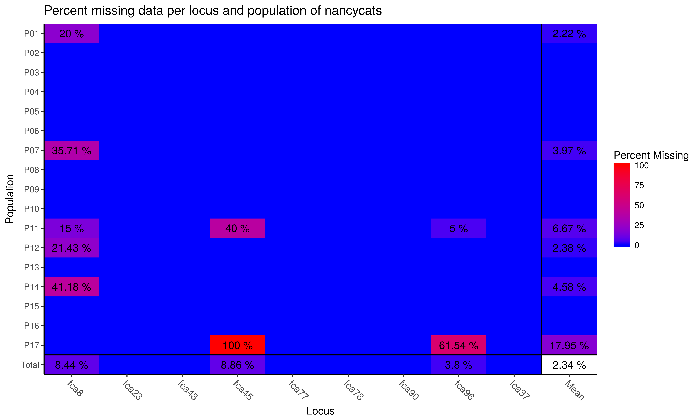
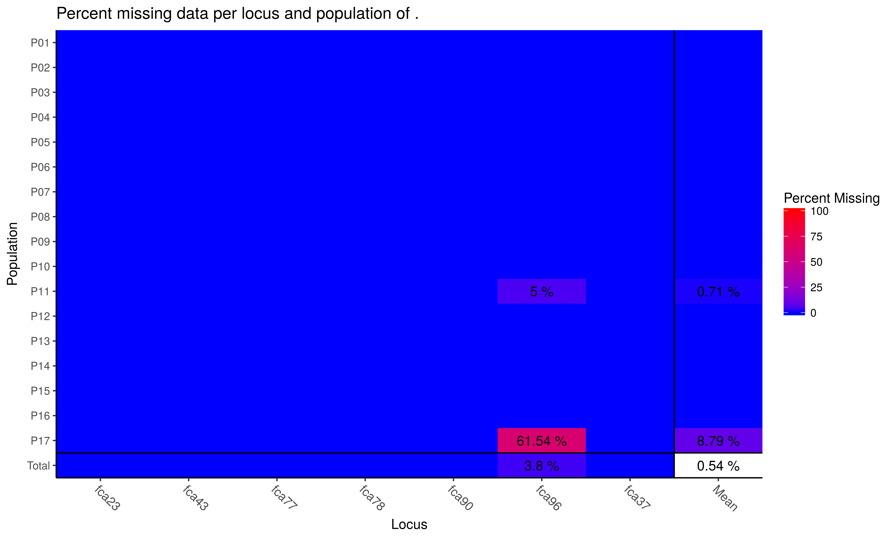
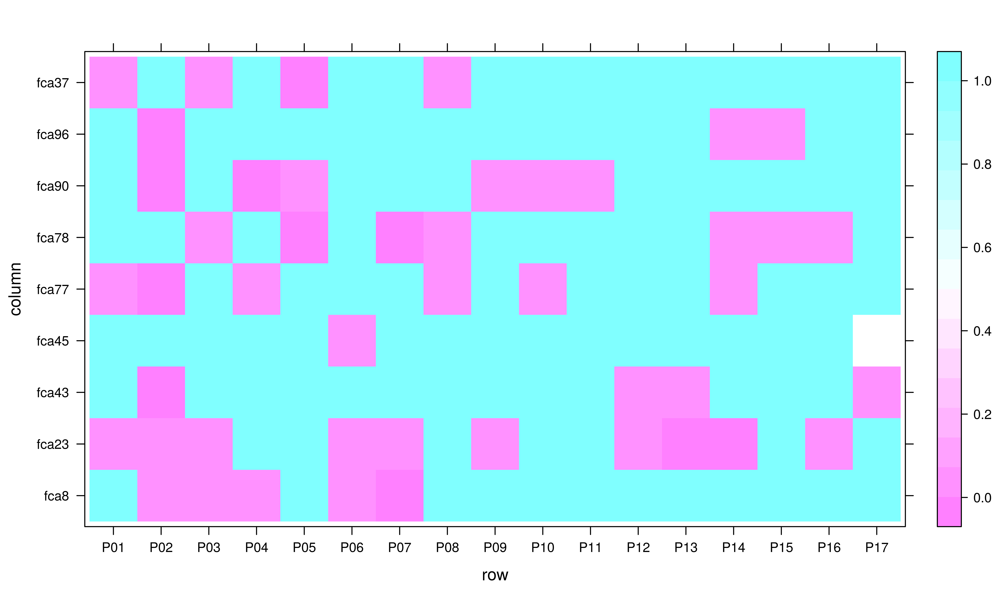

6: Locus stats, heterozygosity, HWE
A rigorous population genetic analysis looks closely at the data to assess quality and identify outliers or problems in the data such as erroneous allele calls. This chapter focuses on analysis on a per-locus level. While there are statistics that analyze populations across loci, it is important to analyze each locus independently to make sure that one locus is not introducing bias or spurious errors into the analysis.
Note: Many of these statistics are specific to co-dominant data.
Locus summary statistics
A quick way to assess quality of the data is to determine the number, diversity, expected heterozygosity, and evenness of the alleles at each locus. As an example, we will use data for the fungal-like protist Phytophthora infestans from (Goss et al., 2014). First, we’ll use the function locus_table to get all of the statistics mentioned above. For documentation on this function type ?locus_table. Here is a first look at each locus:
library("poppr") # Make sure poppr is loaded if you haven't done so already.
library("magrittr") # We will also use magrittr for part of this chapter
data("Pinf") # P. infestans data set from Mexico and South America
locus_table(Pinf)##
## allele = Number of observed alleles
## 1-D = Simpson index
## Hexp = Nei's 1978 expected heterozygosity
## ------------------------------------------## summary
## locus allele 1-D Hexp Evenness
## Pi02 10.000 0.633 0.703 0.663
## D13 25.000 0.884 0.921 0.587
## Pi33 2.000 0.012 0.023 0.322
## Pi04 4.000 0.578 0.771 0.785
## Pi4B 7.000 0.669 0.780 0.707
## Pi16 6.000 0.403 0.484 0.507
## G11 21.000 0.839 0.881 0.544
## Pi56 3.000 0.361 0.541 0.707
## Pi63 3.000 0.413 0.619 0.641
## Pi70 3.000 0.279 0.419 0.580
## Pi89 11.000 0.615 0.677 0.578
## mean 8.636 0.517 0.620 0.602We can see here that we have a widely variable number of alleles per locus and that we actually have a single locus that only has two alleles, Pi33. This locus also has low diversity, low expected heterozygosity and is very uneven in allele distribution. This is a sign that this might be a phylogenetically uninformative locus, where we have two alleles and one is occurring at a minor frequency. We will explore analysis with and without this locus. Let’s first see if both of these alleles exist in both populations of this data set.
locus_table(Pinf, pop = "North America")##
## allele = Number of observed alleles
## 1-D = Simpson index
## Hexp = Nei's 1978 expected heterozygosity
## ------------------------------------------## summary
## locus allele 1-D Hexp Evenness
## Pi02 9.000 0.690 0.776 0.653
## D13 21.000 0.895 0.940 0.684
## Pi33 2.000 0.021 0.041 0.353
## Pi04 4.000 0.545 0.727 0.764
## Pi4B 5.000 0.596 0.745 0.736
## Pi16 6.000 0.425 0.510 0.498
## G11 15.000 0.824 0.883 0.625
## Pi56 3.000 0.335 0.502 0.647
## Pi63 3.000 0.310 0.465 0.568
## Pi70 2.000 0.203 0.406 0.595
## Pi89 11.000 0.627 0.690 0.549
## mean 7.364 0.497 0.608 0.607locus_table(Pinf, pop = "South America")##
## allele = Number of observed alleles
## 1-D = Simpson index
## Hexp = Nei's 1978 expected heterozygosity
## ------------------------------------------## summary
## locus allele 1-D Hexp Evenness
## Pi02 5.00 0.54 0.67 0.83
## D13 13.00 0.83 0.90 0.67
## Pi33 1.00 .
## Pi04 4.00 0.61 0.81 0.81
## Pi4B 7.00 0.70 0.82 0.78
## Pi16 3.00 0.35 0.53 0.69
## G11 14.00 0.80 0.87 0.63
## Pi56 2.00 0.39 0.78 0.81
## Pi63 3.00 0.50 0.75 0.73
## Pi70 3.00 0.37 0.55 0.62
## Pi89 2.00 0.48 0.97 0.97
## mean 5.18 0.51 0.76 0.75Phylogenetically uninformative loci
We can see that the South American populations is fixed for one allele, thus it would not be a bad idea to remove that locus from downstream analyses. We can do this using the function informloci. This will remove loci that contain less than a given percentage of divergent individuals (the default is \(2/N\), where \(N\) equals the number of individuals in the data set).
nLoc(Pinf) # Let's look at our data set, note how many loci we have.## [1] 11iPinf <- informloci(Pinf)## cutoff value: 2.32558139534884 % ( 2 samples ).
## MAF : 0.01
##
## Found 1 uninformative locus
## ============================
## 1 locus found with a cutoff of 2 samples :
## Pi33
## 0 loci found with MAF < 0.01nLoc(iPinf) # Note that we have 1 less locus## [1] 10So, how does this affect multi-locus based statistics? We can see immediately that it didn’t affect the number of multilocus genotypes, let’s take a look at the index of association:
poppr(Pinf)## | South America
## | North America
## | Total## Pop N MLG eMLG SE H G lambda E.5 Hexp Ia
## 1 South America 38 29 29.0 0.000 3.27 23.3 0.957 0.883 0.764 2.873
## 2 North America 48 43 34.5 0.989 3.69 34.9 0.971 0.871 0.608 0.223
## 3 Total 86 72 34.6 1.529 4.19 57.8 0.983 0.875 0.620 0.652
## rbarD File
## 1 0.3446 Pinf
## 2 0.0240 Pinf
## 3 0.0717 Pinfpoppr(iPinf)## | South America
## | North America
## | Total## Pop N MLG eMLG SE H G lambda E.5 Hexp Ia
## 1 South America 38 29 29.0 0.000 3.27 23.3 0.957 0.883 0.764 2.873
## 2 North America 48 43 34.5 0.989 3.69 34.9 0.971 0.871 0.664 0.225
## 3 Total 86 72 34.6 1.529 4.19 57.8 0.983 0.875 0.680 0.655
## rbarD File
## 1 0.3446 iPinf
## 2 0.0255 iPinf
## 3 0.0750 iPinfWe can see that it increased ever so slightly for the “North America” and “Total” populations, but not the “South America” population as expected given the fixed alleles at locus P33.
Missing data
It is often important to asses the percentage of missing data. The poppr function info_table will help you visualize missing data so that you can assess how to treat these further using the function missingno. For this example, we will use the nancycats data set as it contains a wide variety of possibilities for missing data:
data(nancycats)
info_table(nancycats, plot = TRUE)
## Locus
## Population fca8 fca23 fca43 fca45 fca77 fca78 fca90 fca96 fca37 Mean
## P01 0.200 . . . . . . . . 0.022
## P02 . . . . . . . . . .
## P03 . . . . . . . . . .
## P04 . . . . . . . . . .
## P05 . . . . . . . . . .
## P06 . . . . . . . . . .
## P07 0.357 . . . . . . . . 0.040
## P08 . . . . . . . . . .
## P09 . . . . . . . . . .
## P10 . . . . . . . . . .
## P11 0.150 . . 0.400 . . . 0.050 . 0.067
## P12 0.214 . . . . . . . . 0.024
## P13 . . . . . . . . . .
## P14 0.412 . . . . . . . . 0.046
## P15 . . . . . . . . . .
## P16 . . . . . . . . . .
## P17 . . . 1.000 . . . 0.615 . 0.179
## Total 0.084 . . 0.089 . . . 0.038 . 0.023Here we see a few things. The data set has an average of 2.34% missing data overall. More alarming, perhaps is the fact that population 17 has not been genotyped at locus fca45 at all and that locus fca8 shows missing data across many populations. Many analyses in poppr can be performed with missing data in place as it will be either considered an extra allele in the case of MLG calculations or will be interpolated to not contribute to the distance measure used for the index of association. If you want to specifically treat missing data, you can use the function missingno to remove loci or individuals, or replace missing data with zeroes or the average values of the locus.
Removing loci and genotypes
When removing loci or genotypes, you can specify a cutoff representing the percent missing to be removed. The default is 0.05 (5%).
nancycats %>% missingno("loci") %>% info_table(plot = TRUE, scale = FALSE)##
## Found 617 missing values.##
## 2 loci contained missing values greater than 5%.
## Removing 2 loci : fca8 fca45
## Locus
## Population fca23 fca43 fca77 fca78 fca90 fca96 fca37 Mean
## P01 . . . . . . . .
## P02 . . . . . . . .
## P03 . . . . . . . .
## P04 . . . . . . . .
## P05 . . . . . . . .
## P06 . . . . . . . .
## P07 . . . . . . . .
## P08 . . . . . . . .
## P09 . . . . . . . .
## P10 . . . . . . . .
## P11 . . . . . 0.0500 . 0.0071
## P12 . . . . . . . .
## P13 . . . . . . . .
## P14 . . . . . . . .
## P15 . . . . . . . .
## P16 . . . . . . . .
## P17 . . . . . 0.6154 . 0.0879
## Total . . . . . 0.0380 . 0.0054Advanced Users: when
scale = TRUE, the color scale will be set so that the warmest color corresponds to the highest value.
We only removed two loci. If we wanted to make sure we removed everything, we could set cutoff = 0.
miss <- nancycats %>% missingno("loci", cutoff = 0) %>% info_table(plot = TRUE)##
## Found 617 missing values.##
## 3 loci contained missing values greater than 0%.
## Removing 3 loci : fca8 fca45 fca96## No Missing Data Found!Again, removing individuals is also relatively easy:
miss <- nancycats %>% missingno("geno") %>% info_table(plot = TRUE)##
## Found 617 missing values.##
## 38 genotypes contained missing values greater than 5%.
## Removing 38 genotypes : N215 N216 N188 N189 N190 N191 N192 N298 N299 N300
## N301 N302 N303 N304 N310 N195 N197 N198 N199 N200 N201 N206 N182 N184 N186 N282
## N283 N288 N291 N292 N293 N294 N295 N296 N297 N281 N289 N290## No Missing Data Found!miss <- nancycats %>% missingno("geno", cutoff = 0) %>% info_table(plot = TRUE)##
## Found 617 missing values.##
## 38 genotypes contained missing values greater than 0%.
## Removing 38 genotypes : N215 N216 N188 N189 N190 N191 N192 N298 N299 N300
## N301 N302 N303 N304 N310 N195 N197 N198 N199 N200 N201 N206 N182 N184 N186 N282
## N283 N288 N291 N292 N293 N294 N295 N296 N297 N281 N289 N290## No Missing Data Found!The function missingno removes individuals based on the percent of missing data relative to the number of loci. Let’s remove all individuals with 2 missing loci:
miss <- nancycats %>%
missingno("geno", cutoff = 2/nLoc(nancycats)) %>%
info_table(plot = TRUE)##
## 1 genotype contained missing values greater than 22.2222222222222%.
## Removing 1 genotype : N310
We only found one individual in population 11.
Replacing missing data
Replacement of missing data occurs for each allele over all loci. It will replace all missing data in your data set. There are two options: replacement of missing data with zeroes, in fact recoding these as another allelic state, or replacement of missing data with the average allele frequency observed.
Note that the first population in the data set has 20% missing data at the first locus. Here is the un-replaced data for reference:
nan1 <- popsub(nancycats, 1, drop = TRUE) # Dropping alleles not in that population.
tab(nan1[loc = "L1"])##
## N215
## N216
## N217
## N218
## N219
## N220
## N221
## N222
## N223
## N224nanzero <- missingno(nancycats, "zero")##
## Replaced 617 missing values.tab(popsub(nanzero, 1, drop = TRUE)[loc = "fca8"])## fca8.133 fca8.135 fca8.137 fca8.143
## N215 0 0 0 0
## N216 0 0 0 0
## N217 0 1 0 1
## N218 1 1 0 0
## N219 1 1 0 0
## N220 0 1 0 1
## N221 0 2 0 0
## N222 0 1 0 1
## N223 0 0 1 1
## N224 0 2 0 0The NAs have been replaced with zeroes. Now let’s look at what happens when we replace with "mean".
nanmean <- missingno(nancycats, "mean")##
## Replaced 617 missing values.tab(popsub(nanmean, 1, drop = TRUE)[loc = "fca8"])## fca8.117 fca8.119 fca8.121 fca8.123 fca8.127 fca8.129
## N215 0.004608295 0.004608295 0.02764977 0.1336406 0.004608295 0.0921659
## N216 0.004608295 0.004608295 0.02764977 0.1336406 0.004608295 0.0921659
## N217 0.000000000 0.000000000 0.00000000 0.0000000 0.000000000 0.0000000
## N218 0.000000000 0.000000000 0.00000000 0.0000000 0.000000000 0.0000000
## N219 0.000000000 0.000000000 0.00000000 0.0000000 0.000000000 0.0000000
## N220 0.000000000 0.000000000 0.00000000 0.0000000 0.000000000 0.0000000
## N221 0.000000000 0.000000000 0.00000000 0.0000000 0.000000000 0.0000000
## N222 0.000000000 0.000000000 0.00000000 0.0000000 0.000000000 0.0000000
## N223 0.000000000 0.000000000 0.00000000 0.0000000 0.000000000 0.0000000
## N224 0.000000000 0.000000000 0.00000000 0.0000000 0.000000000 0.0000000
## fca8.131 fca8.133 fca8.135 fca8.137 fca8.139 fca8.141 fca8.143
## N215 0.1013825 0.1520737 0.483871 0.3824885 0.124424 0.1889401 0.202765
## N216 0.1013825 0.1520737 0.483871 0.3824885 0.124424 0.1889401 0.202765
## N217 0.0000000 0.0000000 1.000000 0.0000000 0.000000 0.0000000 1.000000
## N218 0.0000000 1.0000000 1.000000 0.0000000 0.000000 0.0000000 0.000000
## N219 0.0000000 1.0000000 1.000000 0.0000000 0.000000 0.0000000 0.000000
## N220 0.0000000 0.0000000 1.000000 0.0000000 0.000000 0.0000000 1.000000
## N221 0.0000000 0.0000000 2.000000 0.0000000 0.000000 0.0000000 0.000000
## N222 0.0000000 0.0000000 1.000000 0.0000000 0.000000 0.0000000 1.000000
## N223 0.0000000 0.0000000 0.000000 1.0000000 0.000000 0.0000000 1.000000
## N224 0.0000000 0.0000000 2.000000 0.0000000 0.000000 0.0000000 0.000000
## fca8.145 fca8.147 fca8.149
## N215 0.05069124 0.01382488 0.03225806
## N216 0.05069124 0.01382488 0.03225806
## N217 0.00000000 0.00000000 0.00000000
## N218 0.00000000 0.00000000 0.00000000
## N219 0.00000000 0.00000000 0.00000000
## N220 0.00000000 0.00000000 0.00000000
## N221 0.00000000 0.00000000 0.00000000
## N222 0.00000000 0.00000000 0.00000000
## N223 0.00000000 0.00000000 0.00000000
## N224 0.00000000 0.00000000 0.00000000Notice that there are a lot more alleles than there were originally. This is because the procedure is performed over the entire data set, not by population. Let’s look at what happens if we perform the same routine on the subset data.
nan1 <- nancycats %>% popsub(1, drop = TRUE) %>% missingno("mean")##
## Replaced 8 missing values.tab(nan1[loc = "fca8"])## fca8.133 fca8.135 fca8.137 fca8.143
## N215 0.25 1.125 0.125 0.5
## N216 0.25 1.125 0.125 0.5
## N217 0.00 1.000 0.000 1.0
## N218 1.00 1.000 0.000 0.0
## N219 1.00 1.000 0.000 0.0
## N220 0.00 1.000 0.000 1.0
## N221 0.00 2.000 0.000 0.0
## N222 0.00 1.000 0.000 1.0
## N223 0.00 0.000 1.000 1.0
## N224 0.00 2.000 0.000 0.0Hardy-Weinberg equilibrium
Next, let’s determine if our populations are in Hardy-Weinberg equilibrium. We will again use the nancycats data to test for HWE using the function hw.test() from the pegas package. This will compute the \(\chi^2\) statistic over the entire data set and compute two P-values, one analytical and one derived from permutations:
library("pegas")
(nanhwe.full <- hw.test(nancycats, B = 1000)) # performs 1000 permuatations## chi^2 df Pr(chi^2 >) Pr.exact
## fca8 395.80006 120 0.000000e+00 0
## fca23 239.34221 55 0.000000e+00 0
## fca43 434.33397 45 0.000000e+00 0
## fca45 66.11849 36 1.622163e-03 0
## fca77 270.52066 66 0.000000e+00 0
## fca78 402.80002 28 0.000000e+00 0
## fca90 217.19836 66 0.000000e+00 0
## fca96 193.36764 66 1.965095e-14 0
## fca37 291.00731 153 1.209777e-10 0We can see here that both the analytical p-value and permuted p-value show that we have confidence that all loci are not under the null expectation of HWE. This makes sense given that these data represent 17 populations of cats. If we wanted to check what the HWE statistic for each population is, we should first separate the populations with the function seppop(). For this exercise, we will only focus on the analytical p-value by setting B = 0.
(nanhwe.pop <- seppop(nancycats) %>% lapply(hw.test, B = 0))## $P01
## chi^2 df Pr(chi^2 >)
## fca8 5.135802 6 0.526517306
## fca23 26.049383 10 0.003674334
## fca43 12.922449 10 0.228040169
## fca45 2.716049 3 0.437506757
## fca77 28.122449 15 0.020815001
## fca78 0.400000 1 0.527089257
## fca90 13.924320 10 0.176471694
## fca96 3.071074 3 0.380796192
## fca37 10.156250 3 0.017283597
##
## $P02
## chi^2 df Pr(chi^2 >)
## fca8 29.86239 15 1.242747e-02
## fca23 23.22222 10 9.955382e-03
## fca43 27.20034 6 1.328128e-04
## fca45 12.21716 15 6.625229e-01
## fca77 86.16667 45 2.152672e-04
## fca78 11.50468 6 7.397613e-02
## fca90 56.75227 15 9.039990e-07
## fca96 92.07157 15 4.066747e-13
## fca37 13.17284 15 5.889498e-01
##
## $P03
## chi^2 df Pr(chi^2 >)
## fca8 39.720000 21 0.008041715
## fca23 45.600000 28 0.019163551
## fca43 14.206612 15 0.509920497
## fca45 4.752066 10 0.907112985
## fca77 11.148148 10 0.346093040
## fca78 31.544379 15 0.007422415
## fca90 9.470000 10 0.488153481
## fca96 4.860000 6 0.561890682
## fca37 13.481481 6 0.035996207
##
## $P04
## chi^2 df Pr(chi^2 >)
## fca8 64.30391 45 0.0308567389
## fca23 30.85879 28 0.3233864330
## fca43 10.77193 15 0.7685881191
## fca45 26.58116 21 0.1851504896
## fca77 35.34014 21 0.0259007804
## fca78 21.05849 15 0.1349710053
## fca90 61.74736 28 0.0002424509
## fca96 14.23444 21 0.8593197525
## fca37 25.96444 28 0.5749990390
##
## $P05
## chi^2 df Pr(chi^2 >)
## fca8 29.338776 28 3.954989e-01
## fca23 19.666667 15 1.850960e-01
## fca43 13.258929 10 2.095530e-01
## fca45 7.775000 10 6.508040e-01
## fca77 19.479167 21 5.544311e-01
## fca78 16.089981 3 1.086817e-03
## fca90 18.340741 10 4.948073e-02
## fca96 9.733333 10 4.641922e-01
## fca37 30.020576 6 3.895597e-05
##
## $P06
## chi^2 df Pr(chi^2 >)
## fca8 34.052469 21 0.03577342
## fca23 19.250000 10 0.03719982
## fca43 6.272727 6 0.39334274
## fca45 13.974490 6 0.02992243
## fca77 32.159722 21 0.05640543
## fca78 20.141354 15 0.16657697
## fca90 20.777778 15 0.14408091
## fca96 23.459877 21 0.31995727
## fca37 39.160000 45 0.71678027
##
## $P07
## chi^2 df Pr(chi^2 >)
## fca8 37.653061 15 0.001015109
## fca23 29.793651 15 0.012687711
## fca43 3.718750 10 0.959144052
## fca45 5.685319 6 0.459347253
## fca77 5.780408 6 0.448233208
## fca78 38.502857 15 0.000760033
## fca90 7.767857 6 0.255608831
## fca96 3.982222 6 0.679082361
## fca37 4.709877 3 0.194316502
##
## $P08
## chi^2 df Pr(chi^2 >)
## fca8 8.185941 15 0.916111766
## fca23 10.513889 10 0.396621136
## fca43 30.000000 21 0.091988007
## fca45 11.521794 10 0.318334361
## fca77 39.400000 21 0.008789371
## fca78 34.444444 21 0.032459406
## fca90 7.155556 6 0.306700905
## fca96 12.233560 15 0.661271220
## fca37 33.511111 21 0.040848059
##
## $P09
## chi^2 df Pr(chi^2 >)
## fca8 7.062500 6 0.31510592
## fca23 27.000000 15 0.02873635
## fca43 1.660408 3 0.64577154
## fca45 35.250000 28 0.16270652
## fca77 6.937778 10 0.73130577
## fca78 5.760000 3 0.12388882
## fca90 21.240000 10 0.01948082
## fca96 5.791837 10 0.83243842
## fca37 3.777778 6 0.70671912
##
## $P10
## chi^2 df Pr(chi^2 >)
## fca8 12.148889 6 0.05872852
## fca23 2.447500 6 0.87429636
## fca43 22.305556 21 0.38208910
## fca45 24.713333 21 0.25979323
## fca77 41.306122 21 0.00513784
## fca78 5.272189 3 0.15291720
## fca90 19.250000 10 0.03719982
## fca96 4.888889 10 0.89847559
## fca37 4.433673 6 0.61820263
##
## $P11
## chi^2 df Pr(chi^2 >)
## fca8 27.49490 21 0.155066305
## fca23 58.52901 45 0.084923238
## fca43 26.97092 21 0.171817797
## fca45 28.01333 28 0.463741139
## fca77 50.64042 36 0.053561033
## fca78 15.01731 10 0.131431929
## fca90 60.22659 36 0.006894609
## fca96 39.55940 28 0.072335908
## fca37 30.97222 21 0.074121484
##
## $P12
## chi^2 df Pr(chi^2 >)
## fca8 35.2000000 28 0.164120103
## fca23 35.5833333 21 0.024340677
## fca43 28.5950000 10 0.001448621
## fca45 2.2400000 15 0.999937497
## fca77 18.2978571 15 0.247330251
## fca78 2.9814815 3 0.394489189
## fca90 20.7509679 15 0.144976448
## fca96 0.6616257 6 0.995282078
## fca37 32.1821433 21 0.056109916
##
## $P13
## chi^2 df Pr(chi^2 >)
## fca8 12.338120 10 0.2630645196
## fca23 30.333333 10 0.0007554178
## fca43 21.702778 10 0.0166924694
## fca45 11.739796 15 0.6986081422
## fca77 16.827778 10 0.0782627471
## fca78 2.567901 3 0.4631446836
## fca90 17.333333 10 0.0673059558
## fca96 10.219876 10 0.4214193724
## fca37 14.828125 10 0.1384548888
##
## $P14
## chi^2 df Pr(chi^2 >)
## fca8 67.500000 66 4.256183e-01
## fca23 49.799592 15 1.298351e-05
## fca43 31.801084 21 6.132040e-02
## fca45 7.930211 10 6.356538e-01
## fca77 27.672222 15 2.371323e-02
## fca78 28.097222 15 2.096833e-02
## fca90 30.337654 21 8.540995e-02
## fca96 58.085432 36 1.128794e-02
## fca37 0.489298 3 9.212362e-01
##
## $P15
## chi^2 df Pr(chi^2 >)
## fca8 3.786395 6 0.705556557
## fca23 5.228395 6 0.514871229
## fca43 4.820988 6 0.566969462
## fca45 6.302083 10 0.789277136
## fca77 7.260000 10 0.700692473
## fca78 18.740741 6 0.004624641
## fca90 18.122500 15 0.256280157
## fca96 26.510000 15 0.032991782
## fca37 12.222222 6 0.057190992
##
## $P16
## chi^2 df Pr(chi^2 >)
## fca8 7.450000 6 0.281226569
## fca23 12.734694 6 0.047447914
## fca43 9.424036 10 0.492388326
## fca45 5.882231 6 0.436511213
## fca77 18.986667 15 0.214338721
## fca78 26.666667 10 0.002939821
## fca90 10.400000 6 0.108786650
## fca96 17.703333 10 0.060178994
## fca37 2.055700 3 0.560926769
##
## $P17
## chi^2 df Pr(chi^2 >)
## fca8 22.100000 15 0.1052085
## fca23 10.631111 10 0.3869703
## fca43 22.071111 10 0.0147464
## fca45 NA NA NA
## fca77 24.180000 21 0.2844190
## fca78 1.764543 3 0.6226810
## fca90 6.686359 6 0.3508286
## fca96 0.312500 1 0.5761501
## fca37 5.097337 3 0.1648068Advanced: Visualization of population-wise p-values
Now we have one matrix per sample, but all we care about are the p-values, which are in the third column. We can use the functions sapply and [ to loop to create a matrix that only contains populations in columns and loci in rows.
[is used to subset data, and it’s also a function! It provides an easy way to subset a list of data.
(nanhwe.mat <- sapply(nanhwe.pop, "[", i = TRUE, j = 3)) # Take the third column with all rows## P01 P02 P03 P04 P05
## fca8 0.526517306 1.242747e-02 0.008041715 0.0308567389 3.954989e-01
## fca23 0.003674334 9.955382e-03 0.019163551 0.3233864330 1.850960e-01
## fca43 0.228040169 1.328128e-04 0.509920497 0.7685881191 2.095530e-01
## fca45 0.437506757 6.625229e-01 0.907112985 0.1851504896 6.508040e-01
## fca77 0.020815001 2.152672e-04 0.346093040 0.0259007804 5.544311e-01
## fca78 0.527089257 7.397613e-02 0.007422415 0.1349710053 1.086817e-03
## fca90 0.176471694 9.039990e-07 0.488153481 0.0002424509 4.948073e-02
## fca96 0.380796192 4.066747e-13 0.561890682 0.8593197525 4.641922e-01
## fca37 0.017283597 5.889498e-01 0.035996207 0.5749990390 3.895597e-05
## P06 P07 P08 P09 P10 P11
## fca8 0.03577342 0.001015109 0.916111766 0.31510592 0.05872852 0.155066305
## fca23 0.03719982 0.012687711 0.396621136 0.02873635 0.87429636 0.084923238
## fca43 0.39334274 0.959144052 0.091988007 0.64577154 0.38208910 0.171817797
## fca45 0.02992243 0.459347253 0.318334361 0.16270652 0.25979323 0.463741139
## fca77 0.05640543 0.448233208 0.008789371 0.73130577 0.00513784 0.053561033
## fca78 0.16657697 0.000760033 0.032459406 0.12388882 0.15291720 0.131431929
## fca90 0.14408091 0.255608831 0.306700905 0.01948082 0.03719982 0.006894609
## fca96 0.31995727 0.679082361 0.661271220 0.83243842 0.89847559 0.072335908
## fca37 0.71678027 0.194316502 0.040848059 0.70671912 0.61820263 0.074121484
## P12 P13 P14 P15 P16
## fca8 0.164120103 0.2630645196 4.256183e-01 0.705556557 0.281226569
## fca23 0.024340677 0.0007554178 1.298351e-05 0.514871229 0.047447914
## fca43 0.001448621 0.0166924694 6.132040e-02 0.566969462 0.492388326
## fca45 0.999937497 0.6986081422 6.356538e-01 0.789277136 0.436511213
## fca77 0.247330251 0.0782627471 2.371323e-02 0.700692473 0.214338721
## fca78 0.394489189 0.4631446836 2.096833e-02 0.004624641 0.002939821
## fca90 0.144976448 0.0673059558 8.540995e-02 0.256280157 0.108786650
## fca96 0.995282078 0.4214193724 1.128794e-02 0.032991782 0.060178994
## fca37 0.056109916 0.1384548888 9.212362e-01 0.057190992 0.560926769
## P17
## fca8 0.1052085
## fca23 0.3869703
## fca43 0.0147464
## fca45 NA
## fca77 0.2844190
## fca78 0.6226810
## fca90 0.3508286
## fca96 0.5761501
## fca37 0.1648068This output is still hard to sift through. An easy way to analyze this is by visualizing this as a heatmap. Since we only care whether or not a given locus is in or out of HWE, we will thus define an \(\alpha\) value and set everything above that value to 1 so that we can visually detect candidate loci where we might reject the \(H_o\) of HWE.
alpha <- 0.05
newmat <- nanhwe.mat
newmat[newmat > alpha] <- 1Now we can create a simple heatmap with levelplot.
library("lattice")
levelplot(t(newmat))
This simple plot shows us loci in rows and populations in columns. Note, that all loci shown in pink are loci suspected of not being in HWE with \(p \leq 0.05\).
References
Goss EM., Tabima JF., Cooke DEL., Restrepo S., Fry WE., Forbes GA., Fieland VJ., Cardenas M., Grünwald NJ. 2014. The irish potato famine pathogen Phytophthora infestans originated in central mexico rather than the andes. Proceedings of the National Academy of Sciences 111:8791–8796. Available at: http://www.pnas.org/content/early/2014/05/29/1401884111.abstract